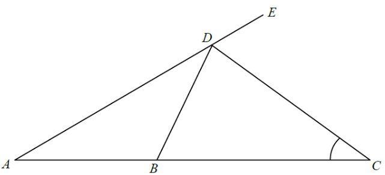

幾何 · 等腰三角形與外角

設 $\angle BAD=\angle BDA=x$。
$\angle CBD$ 是 $\triangle ABD$ 在 $B$ 的外角：
$$\angle CBD=\angle BAD+\angle BDA=2x$$
$$\angle CDB=2x$$
$$x+2x+66^{\circ}=180^{\circ}\quad\Longrightarrow\quad x=38^{\circ}$$
$$38^{\circ}+\angle ACD=66^{\circ}\quad\Longrightarrow\quad \angle ACD=28^{\circ}$$